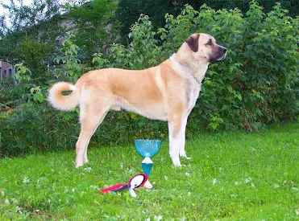

ძაღლი
ძაღლი (ლათ. Canis) — ძუძუმწოვრების გვარი ძაღლისებრთა ოჯახისა. მათი სხეულის სიგრძე 50-160 სმ, კუდისა — 20-50 სმ, მასა 6-80 კგ აღწევს. აქვთ რამდენადმე წაწვეტებული დინგი, დაცქვეტილი ყურები, მსხვილი და მძლავრი ეშვები. იკვებებიან ცხოველებით, ზოგი ჭამს მძორს, ბოსტნეულს, ხილს, ყურძენს და სხვა. მრავლდებიან წელიწადში ერთხელ. შობენ 1-19 უსუსურ ლეკვს.გავრცელებული არიან ყველგან გარდა ანტარქტიდისა, ახალი ზელანდიისა, მადაგასკარისა, სულავესისა და სხვა ოკეანური კუნძულისა. გვარში ცხრა სახეობაა, რომელთაგან საქართველოში გვხვდება 2 (მგელი და ტურა). ძაღლის გვარს მიეკუთვნება შინაური ძაღლი (C. familiaris), რომლის წინაპარია მგელი.
